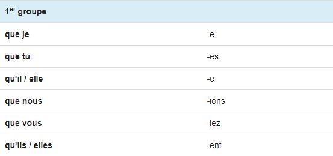
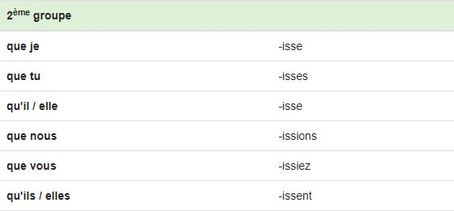
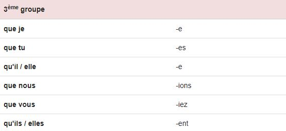
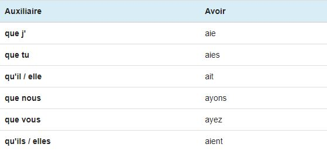
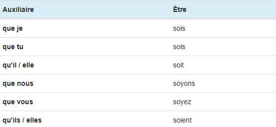

Le Subjonctif
Le subjonctif présent
Utilisation
Le subjonctif est le mode de l'incertain. Le subjonctif présent est un temps simple (non composé) qui exprime généralement un fait envisagé qui n'est pas encore réalisé au moment de l'énonciation: un souhait, un désir, un commandement, l'indignation, l'étonnement... Il s'emploie dans une proposition subordonnée: "Qu’ils finissent leur travail !", "Qu’elle parte !", "Que Dieu vous bénisse !", "Moi, que je fasse une chose pareille ? Jamais !", "Je doute que vous arriviez à temps".
Terminaisons
Les terminaisons du présent du subjonctif sont les suivantes pour tous les verbes: -e, -es, -e, -ions, -iez, -ent.
- Terminaisons du 1er groupe 
- Les verbes du 2ème groupe ajoute l'affixe -iss- avant ces terminaisons 
- Terminaisons du 3ème groupe 
Auxiliaires
Voici la conjugaison des deux auxiliaires avoir et être au présent du subjonctif. Ces deux auxiliaires au présent permettent notamment de construire le subjonctif passé.
 
Premiers exercices
Exercices à faire au maximum sans l'aide de la leçon.
Conjugez le verbe attendu, à la personne attendue, au subjonctif. Ne pas écrire le pronom et ne pas mettre de majuscule !
Si tu as réussis pour ces verbes là, je te conseille de cliquer ici pour t'entraîner sur des verbes et des pronoms aléatoires: Exercice final du conditionnel